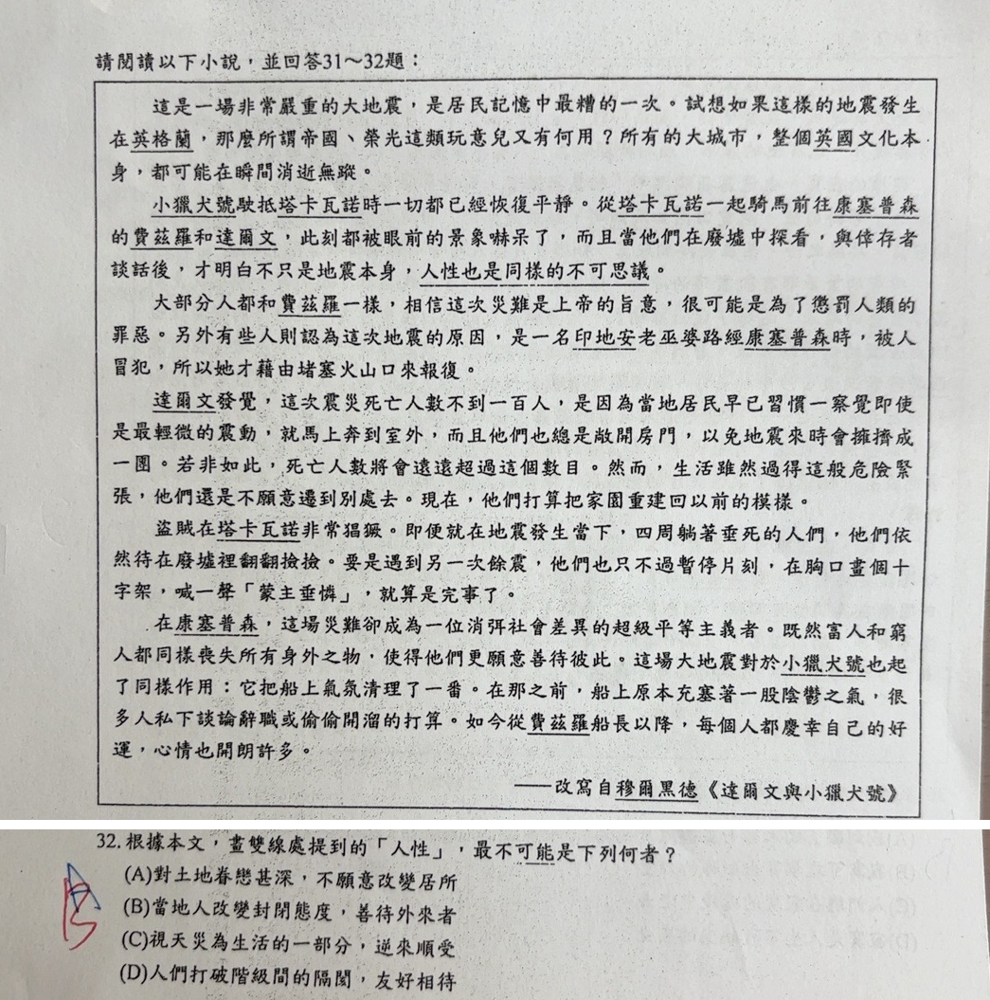

分享原卷｜第32題
完整原題
作答所需文章／材料
這是一場非常嚴重的大地震，是居民記憶中最糟的一次。試想如果這樣的地震發生在英格蘭，那麼所謂帝國、榮光這類玩意兒又有何用？所有的大城市，整個英國文化本身，都可能在瞬間消逝無蹤。 小獵犬號駛抵塔卡瓦諾時一切都已經恢復平靜。從塔卡瓦諾一起騎馬前往康塞普森的費茲羅和達爾文，此刻都被眼前的景象嚇呆了，而且當他們在廢墟中探看，與倖存者談話後，才明白不只是地震本身，人性也是同樣的不可思議。 大部分人都和費茲羅一樣，相信這次災難是上帝的旨意，很可能是為了懲罰人類的罪惡。另外有些人則認為這次地震的原因，是一名印地安老巫婆路經康塞普森時，被人冒犯，所以她才藉由堵塞火山口來報復。 達爾文發覺，這次震災死亡人數不到一百人，是因為當地居民早已習慣一察覺即使是最輕微的震動，就馬上奔到室外，而且他們也總是敞開房門，以免地震來時會擠擁成一團。若非如此，死亡人數將會遠遠超過這個數目。然而，生活雖然過得這般危險緊張，他們還是不願意遷到別處去。現在，他們打算把家園重建回以前的模樣。 盜賊在塔卡瓦諾非常猖獗。即便就在地震發生當下，四周躺著垂死的人們，他們依然待在廢墟裡翻翻撿撿。要是遇到另一次餘震，他們也只不過暫停片刻，在胸口畫個十字架，或一聲「蒙主垂憐」，就算是完事了。 在康塞普森，這場災難卻成為一位消弭社會差異的超級平等主義者。既然富人和窮人都同樣喪失所有身外之物，使得他們更願意善待彼此。這場大地震對於小獵犬號也起了同樣作用：它把船上氣氛清理了一番。在那之前，船上原本充塞著一股陰鬱之氣，很多人私下談論解職或偷偷開溜的打算。如今從費茲羅船長以下，每個人都慶幸自己的好運，心情也開朗許多。 ——改寫自穆爾黑德《達爾文與小獵犬號》 原文畫雙線處：「人性也是同樣的不可思議」。根據本文，畫雙線處提到的「人性」，最不可能是下列何者？
(A) 對土地眷戀甚深，不願意改變居所
(B) 當地人改變封閉態度，善待外來者
(C) 視天災為生活的一部分，逆來順受
(D) 人們打破階級間的隔閡，友好相待
先想一想，再查看答案、解說與原圖
原卷作答：原卷藍筆A，紅筆訂正B。
(B) 當地人改變封閉態度，善待外來者
逐項解析
| 選項與原句 | 判讀 | 句意與判斷理由 |
|---|---|---|
| (A) 對土地眷戀甚深，不願意改變居所 | 不選 | 居民在危險震區仍不願遷居，打算重建原樣，直接支持對故土的依戀。 |
| (B) 當地人改變封閉態度，善待外來者 | 應選 | 原文沒有寫居民由封閉轉為友善對待外來者；船員心情改變不能移作居民對外來者態度的證據。 |
| (C) 視天災為生活的一部分，逆來順受 | 不選 | 居民已習慣震動立即避難、不願搬走，盜賊在餘震時短暫禱告又繼續，表現災難已融入生活的態度。 |
| (D) 人們打破階級間的隔閡，友好相待 | 不選 | 末段明說富人窮人同樣失去財物，因此更願意善待彼此，是消弭階級差異的直接證據。 |
詳細說明與解題步驟
選B。本題問最不可能，應找文章沒有提供證據的描述。A可直接對應居民不願遷居、打算重建家園；C可由居民對頻繁地震的習慣及餘震時的反應理解；D更由末段富人窮人善待彼此直接支持。
B加入「當地人原本封閉、災後善待外來者」的情節，原文沒有。文中船上氣氛從陰鬱轉為開朗，主體是小獵犬號船員，不是當地居民，也沒有談對外來者開放。原AI以船員氣氛轉變替B辯解，混淆了人物與情節，故將原AI的A訂正為B。
核對註記：已實開真正上傳原卷及本題裁圖，逐題核對題幹、全部選項與必要閱讀材料。未提供實際考試日期，日期採首次使用者出題訊息的台灣日期；無教材冊章證據，歸綜合。
原圖（僅本題）
